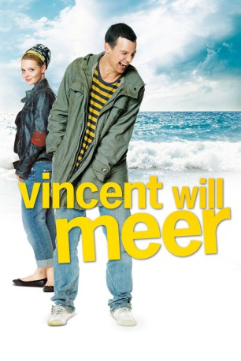
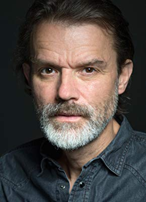

#1756 Vincent will Meer
 
 IMDB-Wertung: 7.1 / 10
IMDB-Wertung: 7.1 / 10  Metascore: 39
Metascore: 39 
Vincent leidet am Tourette-Syndrom. Als seine Mutter stirbt, verfrachtet sein Vater ihn ins Heim. Er hat keine Verbindung zu Vincent, für ihn ist er ein Versager, der Schuld am Tod der Mutter trägt. In der Einrichtung lernt der junge Mann die magersüchtige Marie und den zwangsgestörten Alexander kennen. Als Vincent und Marie beschließen, mit dem Auto der Direktorin nach Italien zu fahren, schließt Alexander sich an. Vincent will zum Meer, die Asche seiner Mutter verstreuen...
Jahr: 2010
Dauer: 96 Minuten
FSK: 6
Land: Deutschland Studio: Constantin FilmTonspuren:
Untertitel: Deutsch,
Auflösung: 1080p (1920x816) Größe: 6359 MB
Genre: Drama
Regisseur: Ralf Huettner
Drehbuch: Florian David Fitz
Soundtrack: Stevie Be-Zet, Ralf Hildenbeutel
Darsteller:
 Florian David Fitz als Vincent
Florian David Fitz als Vincent Karoline Herfurth als Marie
Karoline Herfurth als Marie Heino Ferch als Robert
Heino Ferch als Robert Tim Seyfi als Carabinieri
Tim Seyfi als Carabinieri- Katharina Müller-Elmau als Dr. Rose
- Johannes Allmayer als Alexander
- Karin Thaler als Monika
- Christoph Zrenner als Tankwart 1
- Ulrich Boris Pöppl als Pfarrer
- Lothar Lengowski als Politiker 1
- Markus Eberhard als Politiker 2
- Jan Müller als Schüler 1
- Lucas Schunko als Schüler 2
- Nico Sücker als Schüler 3
-  Butz Ulrich Buse als Tankwart 2
- Petra Bernhardt als
- Felix Rech als
Datei: X:\2010(N-Z)\Vincent will Meer (2010, FSK6, 1920x816).mkv seit 16.08.2015
Festplatte: HD 2010(G-Z)-2011(A-F)
 Es gibt insgesamt 115 Filme in der Gruppe '2010(N-Z)'
Es gibt insgesamt 115 Filme in der Gruppe '2010(N-Z)'